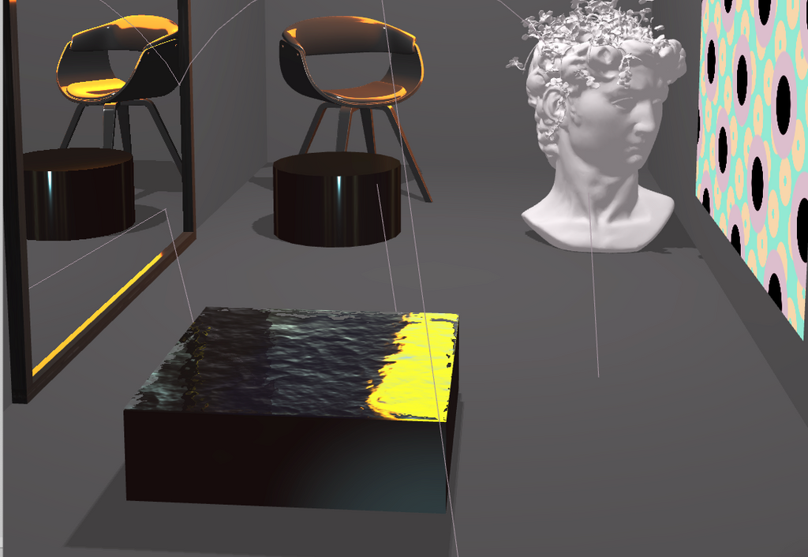

- Week 1: Intern's Greetings!
- Week 2: Refining the MVP
- Week 3: Diving Into Shaders
- Week 4: From 2D to 3D
- Week 5: Back to Inspiration Images
- Week 6: Blended Approach
- Week 7: Restructuring the Project
- Week 8: Drawing Board
- Week 9: Arranging Furniture
- Week 10: Materials and Classes
I started the week by deciding and sketching three different room types: a pastel room, room with neutral colors and room with dark interior. At this stage, these categories are based on the positivity or negativity of the account. The material of the walls is simply decided with if statements:
if (avgTone < 0.095) {
wallMat = new DarkMaterial({
color: 0x3d3b3d,
emissive: new THREE.Color(lightness, lightness, lightness)
});
}
Within DarkMaterial, I'm altering the final shade with variable lightness. I'm mapping the number of negative tweets to a value between 0 and 1 that works well when determining the RGB of the emissive color. With the room with neutral or pastel colors, I'm mapping the number of neutral or positive tweets respectively.
I also decided that each room has a sculpture. Currently, whether the sculpture is modern or traditional depends on if the word "future" is mentioned on the account. If the sculpture is modern, it might be round or have sharp edges, again depending on the profile. The room also has something to sit on: depending on some data, I’ll be switching between soft pillows and a modern chair.

With the sculptures, pillows and chair, I’m bringing glTF models back to my app by using some free and lightweight models from Sketchfab. The models you can see on this post are by Johnson Martin, karymeh3d, doubletwisted and Aiekick.
if (avgTone > 0.2) {
loader.load(
"/static/pillow/scene.gltf",
function (gltf) {
gltf.scene.traverse(function (child) {
if (child.isMesh) {
child.material = new THREE.MeshLambertMaterial({
color: 0x75b9db,
emissive: 0x8b82a5
});
child.castShadow = true;
}
});
gltf.scene.position.x = -10;
gltf.scene.position.y = 8;
gltf.scene.position.z = -110;
gltf.scene.rotateY((Math.PI / 2) * 0.85);
gltf.scene.scale.set(10, 10.5, 10);
scene.add(gltf.scene);
}
);
}
Additionally, the scene now uses a sky and sun shader based on this Three.js example.
Setting the Lights
Sometimes the room does not have a plant. In this experiment, when the tone of the account is negative enough, the plant is replaced with a small pool instead:

Here we can see another difference: sunlight!
This week, both I and Nikolai spent a lot of time studying the lights in Three.js. Some good resources:
In the current setup, I have one AmbientLight giving a general, soft lightning to the room. It doesn't create shadows and it has no direction. Second, there is a PointLight in the ceiling that behaves a bit like a lightbulb. There is also a Spotligt directed at the plant and the vase. Finally, my favorite: a yellow RectArea light that is basically a plane that simulates sunlight right where the window is.
Lights and materials proved to be a huge topic as, for example, plants using PhongMaterial went black when combined with the physicallyCorrectLights setting that worked well with StandardMaterial.
Nicholas joined one of our sessions and gave good feedback on the visuals. For example, he suggested that the loud patterns of the floor could be used on smaller object instead so that objects on the floor are able to stand out. I agree; the floor patterns can easily be used to create an abstract painting.